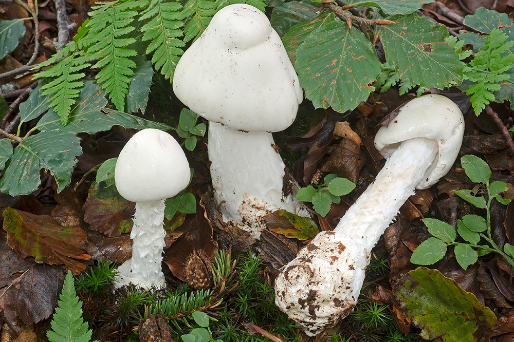
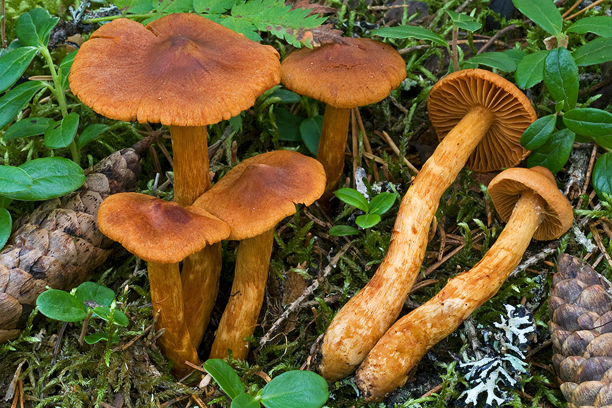
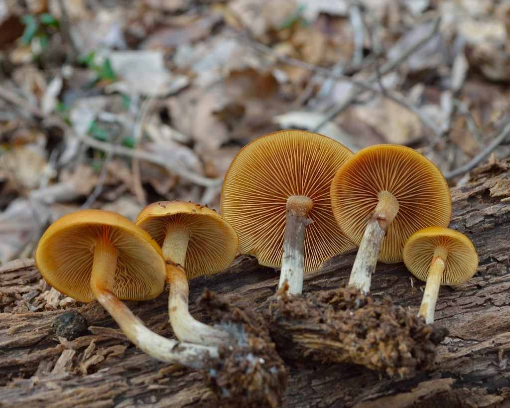
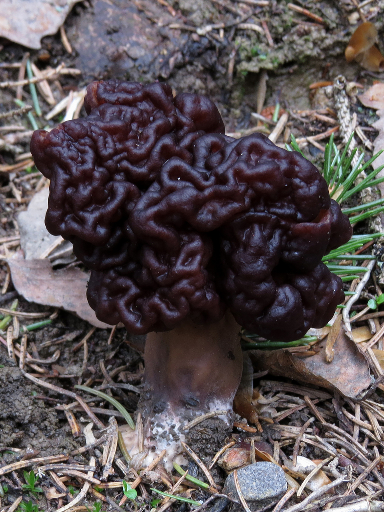
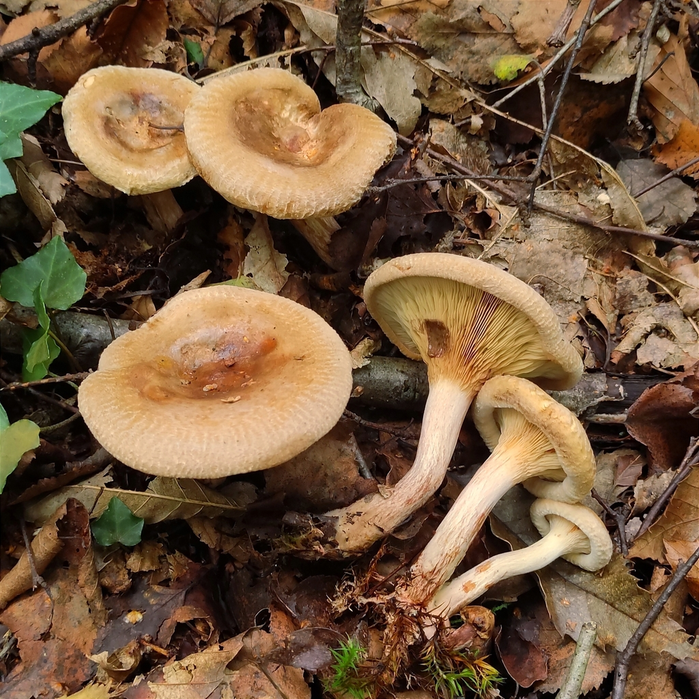

04. Deadly & Toxic Species: The Survival Manual
CAUTION: MUSHROOM POISONING EMERGENCY PROTOCOL
- Finnish Poison Information Centre (Myrkytystietokeskus):
- General Emergency: 112
- DO NOT INDUCE VOMITING unless explicitly instructed by the Poison Information Centre.
- Save All Specimens: Keep raw leftovers, peelings, or cleaning scraps in a paper bag or bowl in the fridge. Emergency doctors need these for microscopic spore analysis to determine if amatoxin or orellanine antidotes are required.
Finland is home to several deadly poisonous mushrooms that contain toxins resistant to boiling, drying, and freezing. Two of the most lethal—Amanita virosa and Cortinarius rubellus—grow commonly in the mossy spruce and pine forests directly surrounding Helsinki.
1. Destroying Angel (Amanita virosa / Valkokärpässieni)
Status: DEADLY POISONOUS (Tappavan myrkyllinen)
Macro-Morphological Identification Keys
- Cap: 5–12 cm. Pure silky white, occasionally ivory or yellowish at the center when aged. Conical-bell shaped when young, expanding to convex with ragged edges.
- Gills (Heltat): PURE WHITE, free from the stem, crowded. Never turn brown or pink.
- Stem (Jalka): 8–15 cm tall, slender, pure white, with a shaggy/scaly surface (sukeltajamainen).
- Ring (Rengas): Thin, delicate, skirt-like white ring on the upper stem (can tear or stick to cap margin in heavy rain).
- Volva / Universal Veil Sac (Tuppi): CRITICAL FEATURE. A distinct, loose, bag-like white cup at the swollen base of the stem, often buried 3–7 cm deep inside thick green moss.
- Flesh & Odor: Pure white, unchanging. Faint sickly sweet, unpleasantly cloying or radish-like when mature.
Habitat in Helsinki Region
- Mesic Norway spruce forests (tuore kangas), mixed spruce-birch stands, rich moss blankets (Hylocomium, Pleurozium).
- Common in Keskuspuisto (Pitkäkoski), Sipoonkorpi, Nuuksio, and Luukki.
- Season: August to October.
Toxin & Clinical Pathology: Amatoxins
- Mechanism: Alpha-amanitin irreversibly binds to and inhibits RNA polymerase II in human liver and kidney cells, halting protein synthesis and triggering massive cell necrosis.
- The Treacherous Three-Phase Progression:
Deadly Confusion Risks
- Meadow / Wood Mushrooms (Agaricus / Herkkusienet): Edible button mushrooms have brown-to-chocolate gills in maturity, never pure white gills. Rule: Novices in Finland must NEVER pick white-gilled white mushrooms.
2. Deadly Webcap (Cortinarius rubellus / Suippumyrkkyseitikki)
Status: DEADLY POISONOUS (Tappavan myrkyllinen)
Macro-Morphological Identification Keys
- Cap: 3–8 cm. Uniformly reddish-brown, cinnamon-brown, or rusty copper. Distinctly pointed / conical umbo in the center (like a miniature wizard’s hat). Dry, finely fibrous to velvety texture.
- Gills (Heltat): Broadly spaced, thick, rusty-cinnamon or red-brown (colored by rusty spores). Attached to the stem.
- Stem (Jalka): 5–12 cm tall, cylindrical, same cinnamon color as cap, adorned with yellowish zigzag banding (siksak-vyöt) from veil remnants.
- Cortina: In young buttons, a cobweb-like fibrous veil (kortiina) stretches from the cap margin to the stem.
- Flesh & Odor: Reddish-yellow to pale cinnamon. Faint odor of raw radish or freshly turned turnip.
Habitat in Helsinki Region
- Damp, mossy, acidic Norway spruce heaths (mustikkatyypin kuusikko), edges of spruce mires (korpi), sphagnum-filled depressions.
- EXTREME DANGER: It frequently grows intermingled right beside blueberry bushes and Golden Chanterelles in Nuuksio, Sipoonkorpi, and Vaakkoi!
- Season: August to October.
Toxin & Clinical Pathology: Orellanine
- Mechanism: Orellanine is a powerful bipyridine nephrotoxin that selectively attacks and destroys renal proximal tubular cells.
- The Long Latency Nightmare (2 to 14 Days!):
Deadly Confusion Risks
- Novices hunting for Golden Chanterelles (Cantharellus cibarius) or Funnel Chanterelles (Craterellus tubaeformis) who hurriedly pluck handfuls of mushrooms out of deep moss without inspecting every single specimen individually.
3. Funeral Bell (Galerina marginata / Myrkkynääpikkä)
Status: DEADLY POISONOUS (Tappavan myrkyllinen)
Macro-Morphological Identification Keys
- Cap: 1.5–4.5 cm. Ochre-brown, honey-brown to watery cinnamon. Conical then flattening with a slight central bump. Striated margin when damp (hygrophanous).
- Gills: Crowded, ochre-brown, darkening to rusty cinnamon.
- Stem: Slender (2–6 mm thick), brownish, with a small membranous ring (rengas) on the upper half, and silvery-white longitudinal fibrillose striations below the ring.
- Substrate: Grows strictly on decaying wood—rotting conifer stumps, fallen mossy logs, buried wood chips.
- Toxin: Contains the exact same lethal amatoxins as the Destroying Angel (Amanita virosa).
Deadly Confusion Risks
- Sheathed Woodtuft (Kuehneromyces mutabilis / Koivunkantosieni):
4. False Morel (Gyromitra esculenta / Korvasieni)
Status: DEADLY TOXIC RAW / TRADITIONAL FINNISH DELICACY
Identification & Ecology
- Cap: 5–12 cm across, reddish-brown to dark chestnut. Distinctly brain-like, folded, convoluted lobes (never pitted like true morels / Morchella). Hollow and chambered inside.
- Habitat: Sandy, disturbed soil in pine forests, logging tracks, sandy path sides.
- Season: May to early June.
Toxin: Gyromitrin
- Metabolism: In the human stomach and liver, gyromitrin hydrolyzes into monomethylhydrazine (MMH)—a volatile hydrazine compound used as rocket propellant!
- Symptoms: Severe vomiting, neurological disorders, convulsions, hemolysis, toxic hepatitis. Inhaling the steam during boiling can also cause severe poisoning!
- Mandatory Finnish Parboiling Protocol (Keitto-ohje):
5. Brown Rollrim (Paxillus involutus / Pulkkosieni)
Status: TOXIC / CHRONIC IMMUNOLOGICAL DANGER
Identification & Ecology
- Cap: 5–15 cm. Ochre-brown to olive-brown. The outer edge of the cap is strongly rolled inwards (sisäänkiertynyt reuna) and remains curled even in maturity.
- Gills: Yellowish-olive to brown, easily detached from cap flesh, and bruise instantly dark brown when pressed with a finger.
- Habitat: Very common in Helsinki urban parks, birch groves, roadsides, and spruce borders.
Danger: The Paxillus Syndrome
- In older Eastern European and Soviet guidebooks, Paxillus involutus was listed as edible after boiling.
- Modern Medical Reality: It contains an unknown antigen that provokes an autoimmune reaction in the human body. With repeated consumption (sometimes after years of eating it without incident), the immune system produces antibodies that suddenly trigger massive autoimmune hemolysis—the body's own immune system destroys its red blood cells, leading to acute kidney failure, shock, and fatal hemolytic anemia. It is strictly classified as poisonous.
Summary Matrix of Dangerous Species
| Species | Finnish Name | Key Warning Sign | Primary Toxin | Target Organ / Hazard |
|---|---|---|---|---|
| Amanita virosa | Valkokärpässieni | Pure white, white gills, stem ring & basal cup | Amatoxins | Liver necrosis (6–24 hr latency) |
| Cortinarius rubellus | Suippumyrkkyseitikki | Pointed cinnamon cap, yellow zigzag stem bands | Orellanine | Permanent kidney destruction (2–14 day latency) |
| Galerina marginata | Myrkkynääpikkä | Small brown wood-grower, ring on smooth stem | Amatoxins | Liver destruction |
| Gyromitra esculenta | Korvasieni | Convoluted brain-like folds in spring | Gyromitrin | Nervous system, liver (volatile MMH) |
| Paxillus involutus | Pulkkosieni | In-rolled velvet margin, gills bruise brown | Paxillus antigen | Autoimmune red blood cell hemolysis |
| Amanita muscaria | Punakärpässieni | Bright red cap with white warts | Ibotenic acid, Muscimol | Central nervous system delirium |